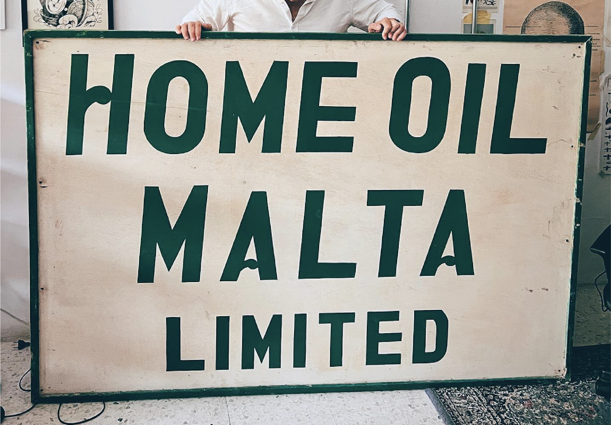
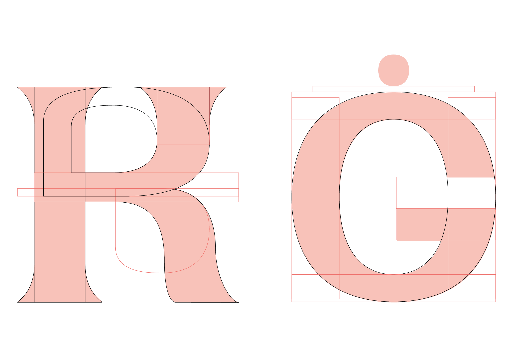
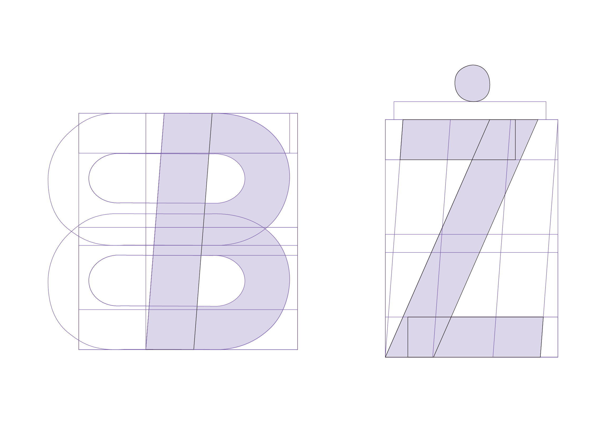
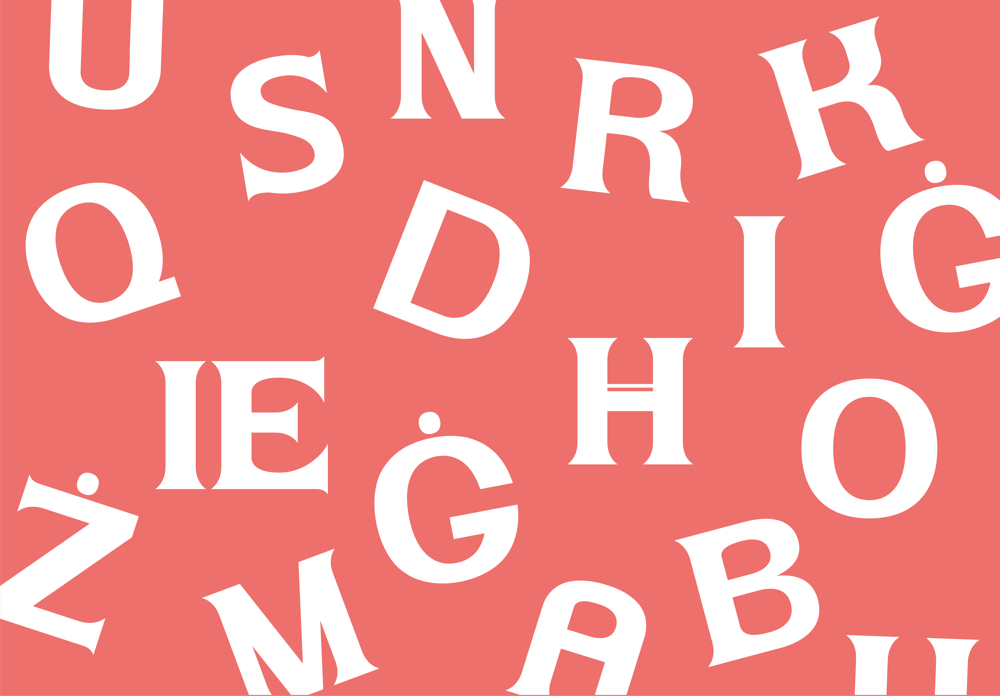
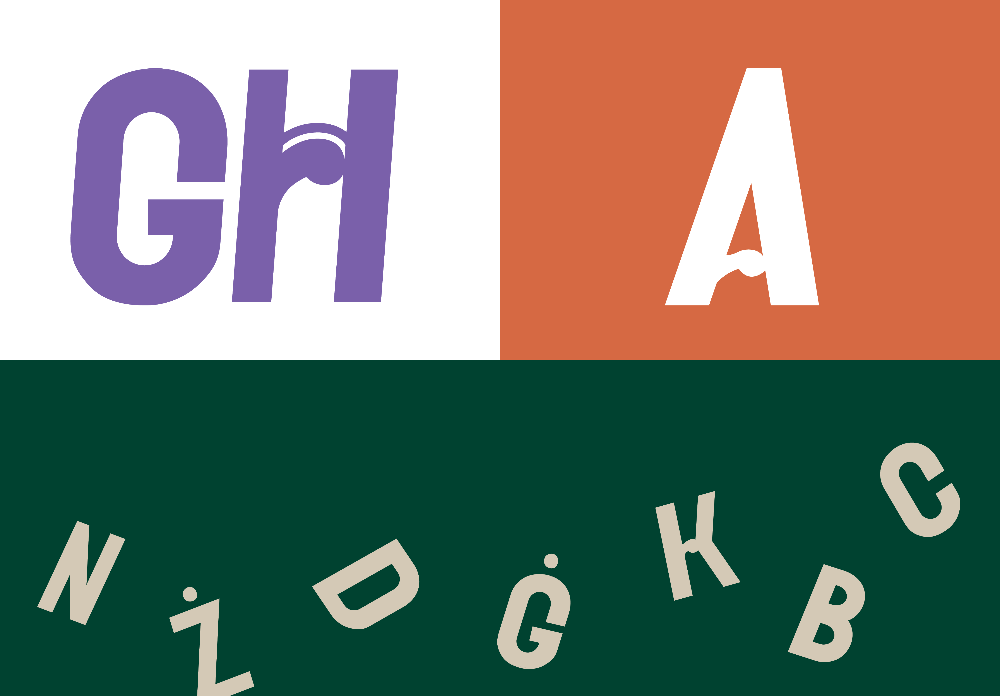
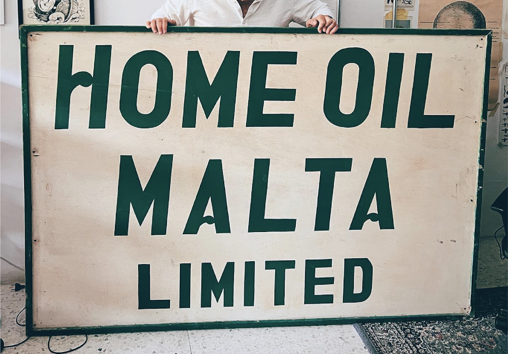
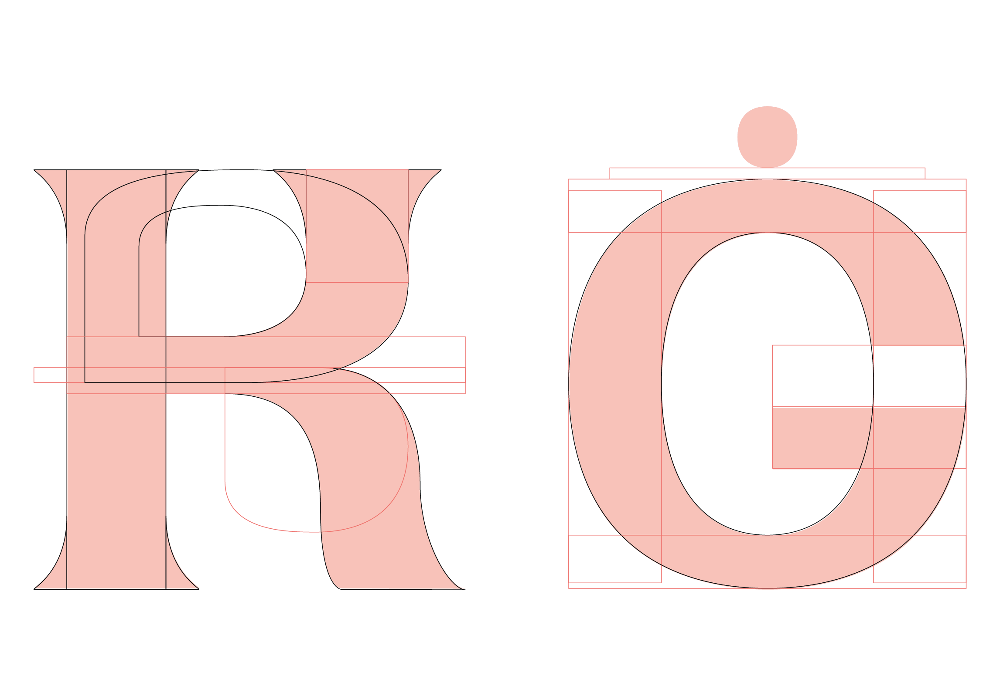
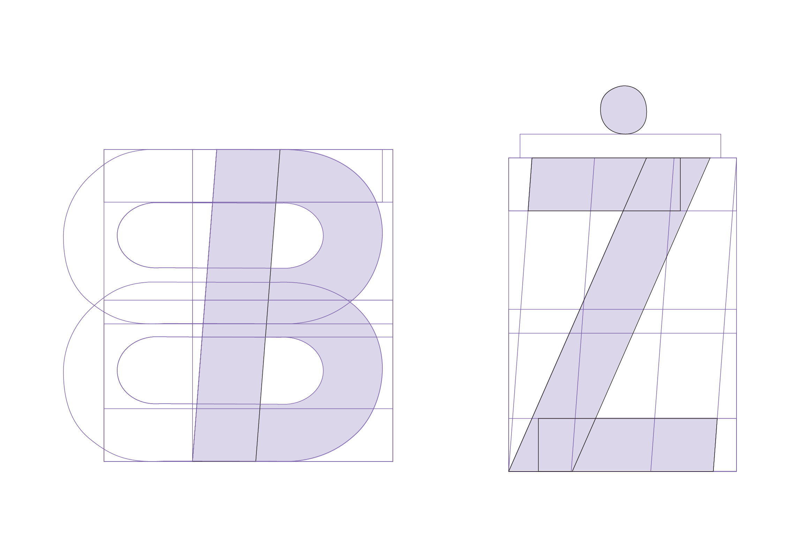
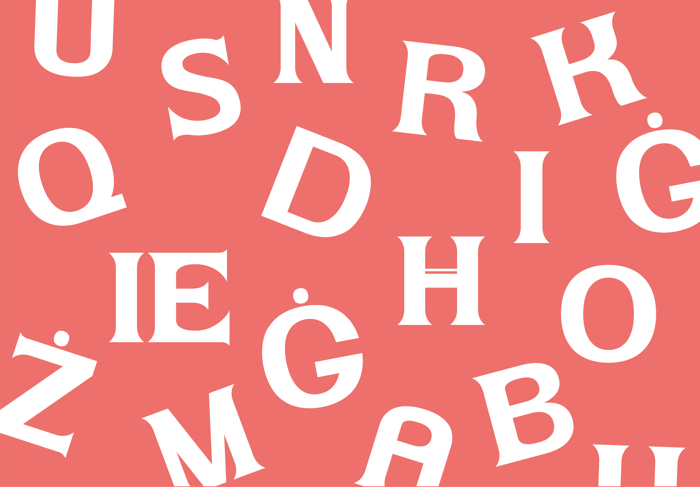
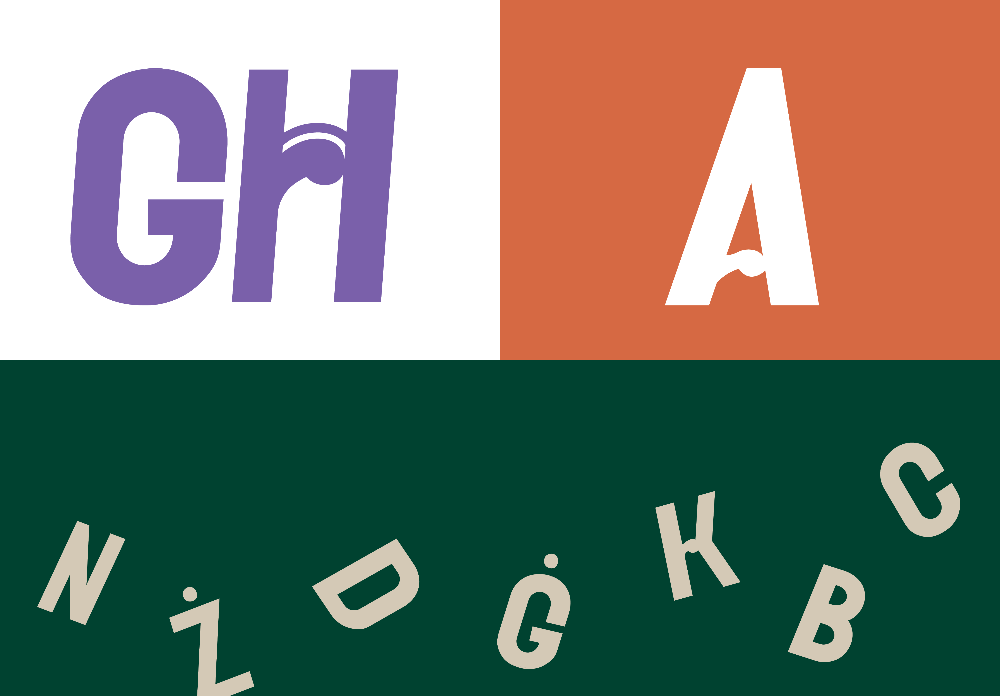
How much of who I am, as a creative, comes from home? This is a question I found myself asking, as a young
designer migrating to London from the small island of Malta. Through developing two initial typefaces from
Maltese hand-made signage and focusing on the inclusion of Maltese letterforms, I began to reflect on my
relationship with home, and the wonderful design possibilities that lie within it.
In order to explore these typefaces visually and tangibly, I produced a selection of risograph prints and
lino prints which championed the type, as well as colour schemes inspired by Malta.
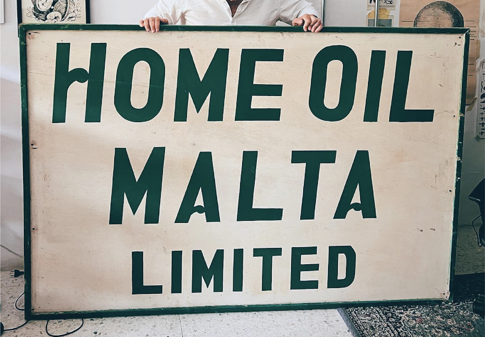
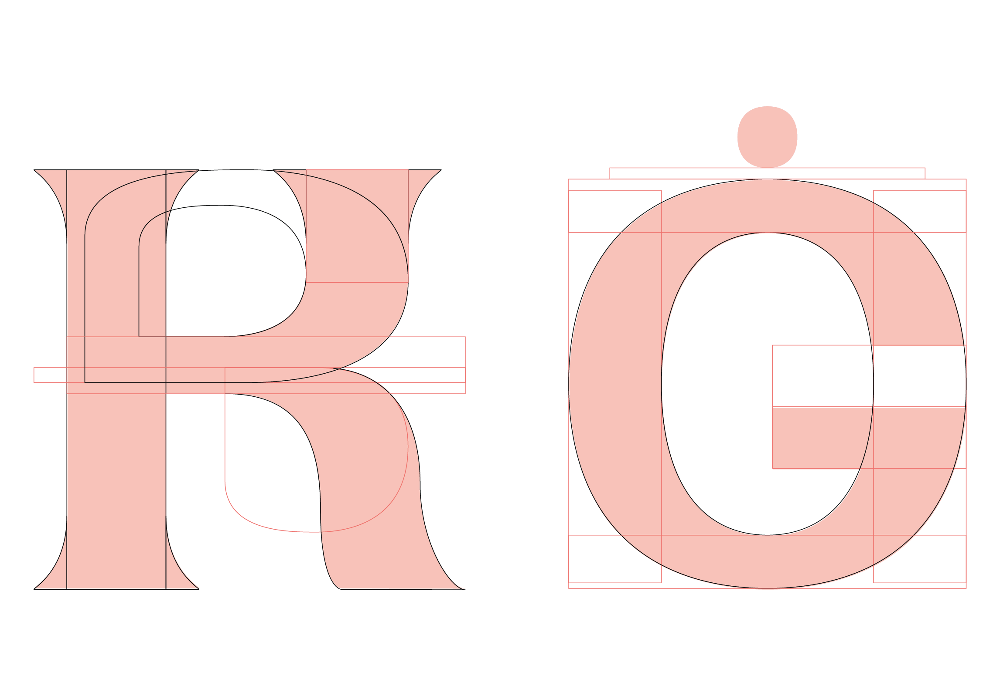
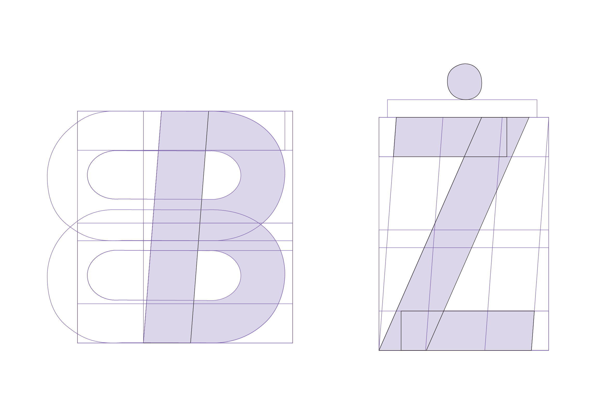
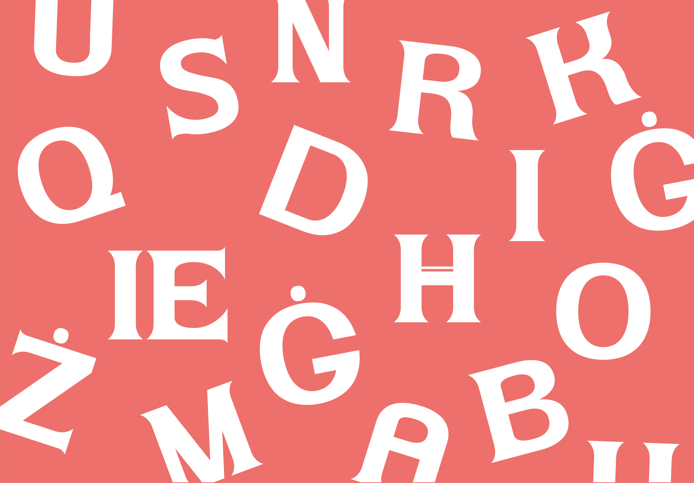
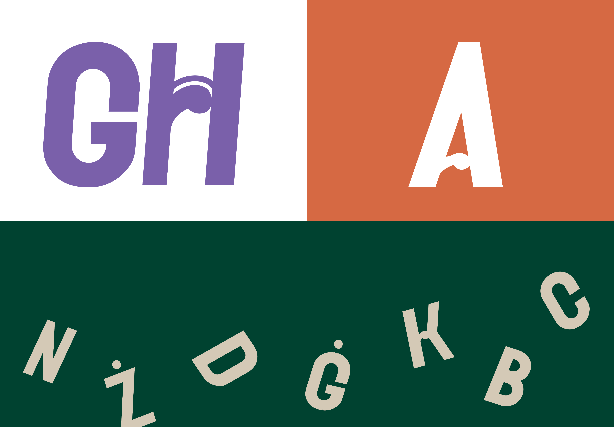